環境構築
3. Gitの設定
1. インストール※Windowsのみ
Note
Gitとは、ファイルのバージョン管理が簡単にできるツールです。
特徴は、「ファイルの変更履歴を管理」、「過去のファイルに戻せる」、「チームで共有できる」ことです。
プログラマーにとっては、多くのコードを編集した上で何か不具合が起きたときに、元のバージョンへ戻すことはよくあることです。そういった際のファイルの管理を効率よく行えるのがGitです。
-
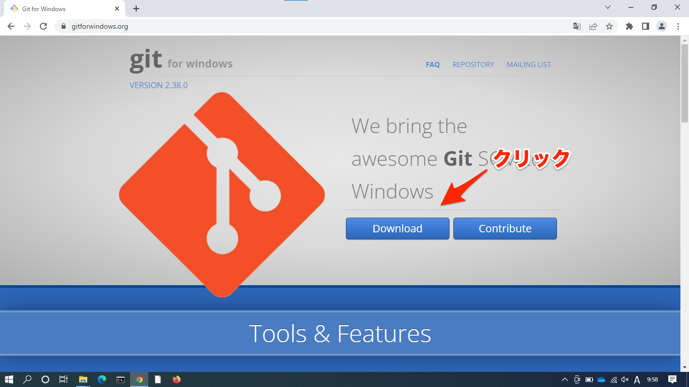
-
インストーラ実行
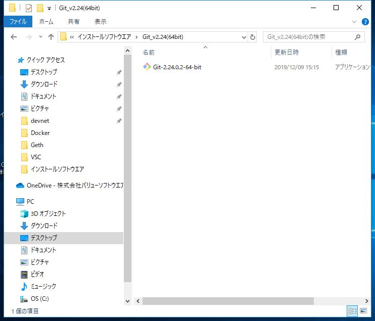
-
インストーラ実行
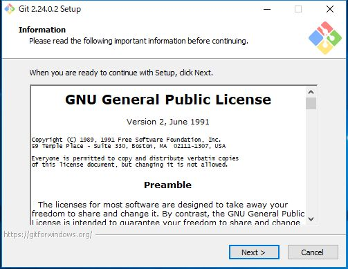
-
インストールディレクトリ選択
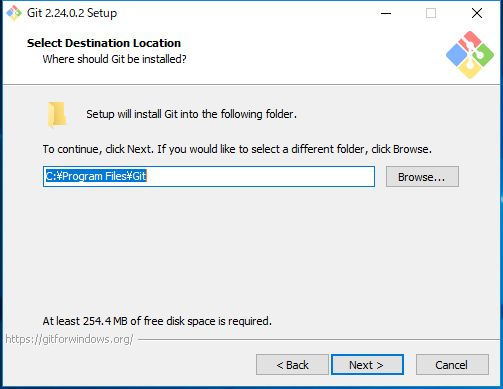
-
インストールコンポーネント選択
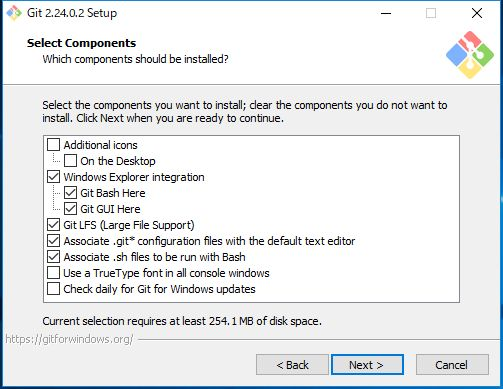
-
StartMenu設定
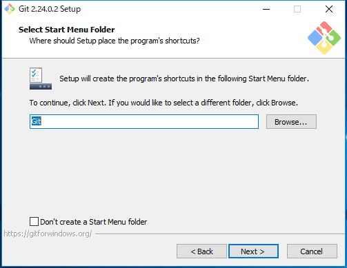
-
デフォルトエディタを選択（ここではVSCを設定）
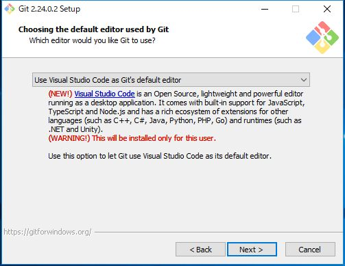
-
ブランチ設定
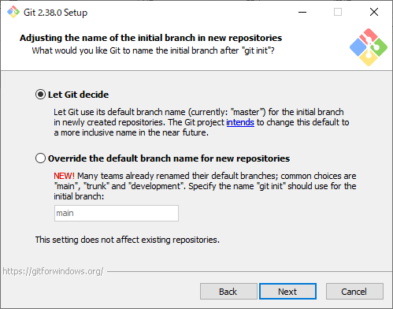
-
PATH環境を設定
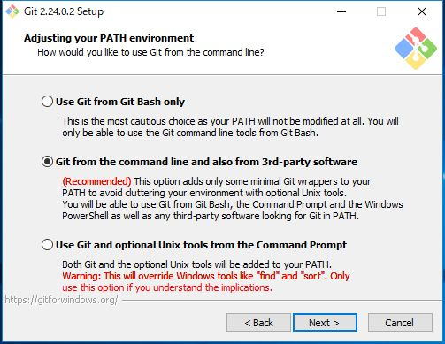
-
SSH接続の設定
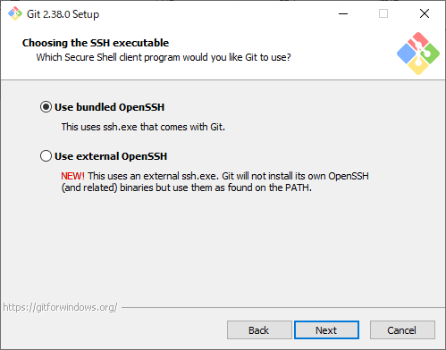
-
HTTPS接続の設定

-
改行コードの設定
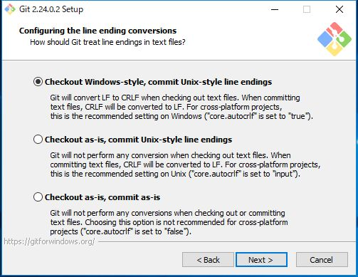
-
ターミナル・エミュレータの設定
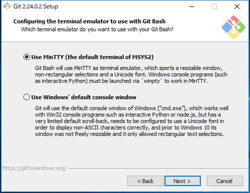
-
git pullの設定
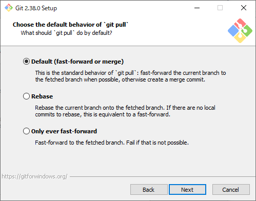
-
マネージャーの設定
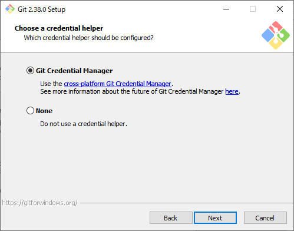
-
拡張オプションの設定
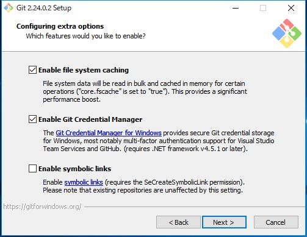
-
ベータ版機能の有効化設定
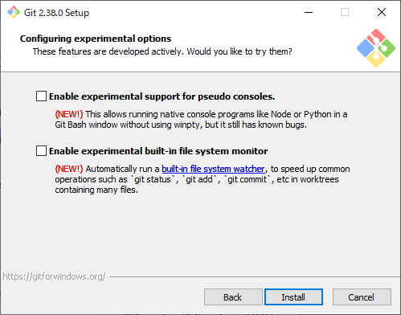
-
インストール中
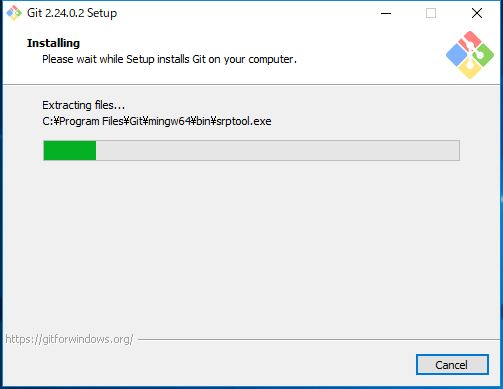
-
完了
-
コマンドプロンプトから確認
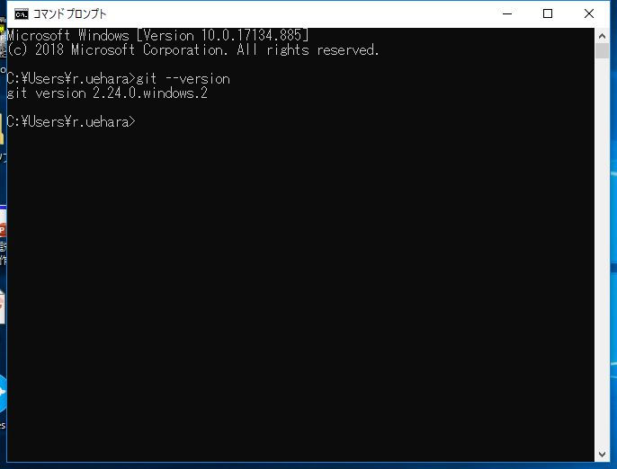
$ git --version
2. アカウント設定を行う
$ git config --global user.name "{別途伝えます}"
$ git config --global user.email "{別途伝えます}"